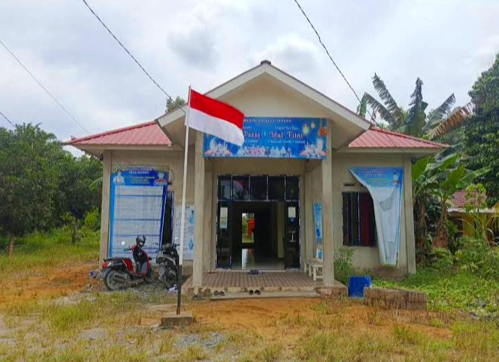
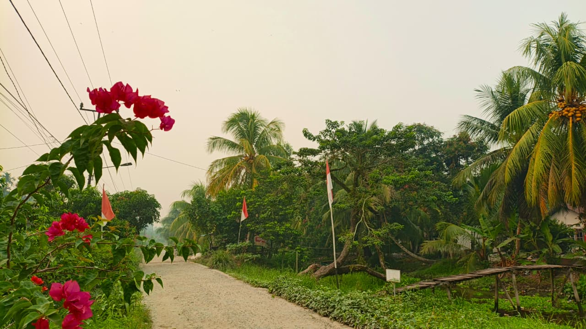

Mengenal lebih dekat Desa Sepadu dan Dusun Seladu.

Desa Sepadu merupakan desa yang berada di Kecamatan Semparuk, Kabupaten Sambas, Provinsi Kalimantan Barat.
Desa dengan suasana yang tenang dan lingkungan yang dekat dengan alam ini menjadi tempat berlangsungnya berbagai aktivitas masyarakat dalam kehidupan sehari-hari.
Setiap sudut desa memiliki suasana tersendiri. Mulai dari rumah warga, jalan desa, hamparan sawah, hingga lingkungan hijau yang memberikan kesan damai.
Kehidupan masyarakat yang dekat dengan alam menjadikan Desa Sepadu memiliki suasana yang sederhana namun memiliki banyak cerita.
